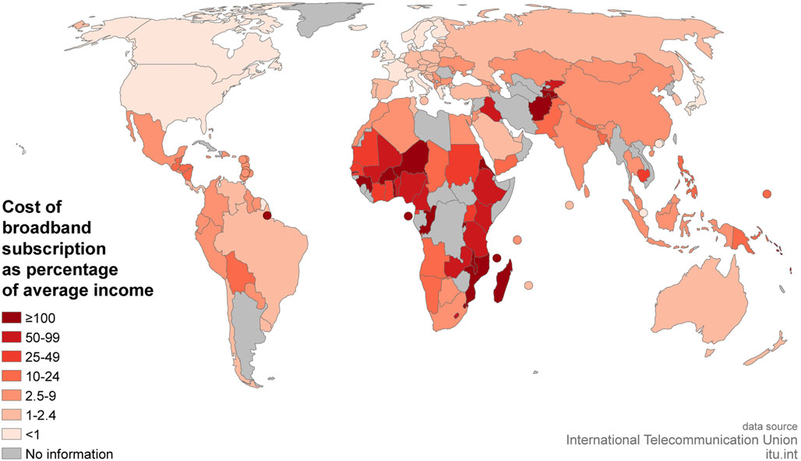
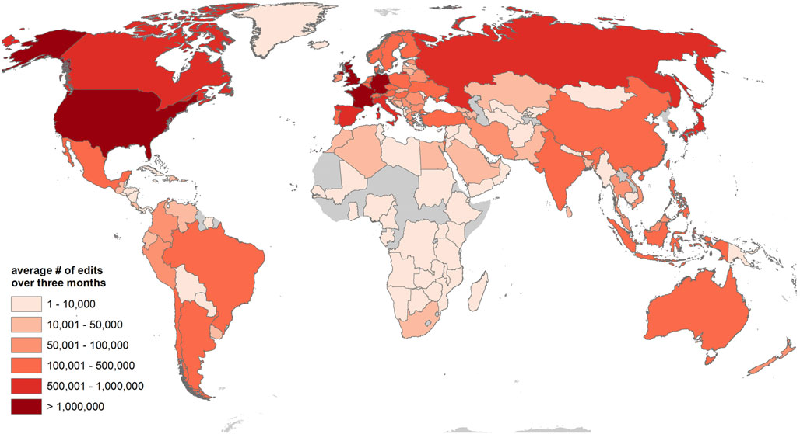
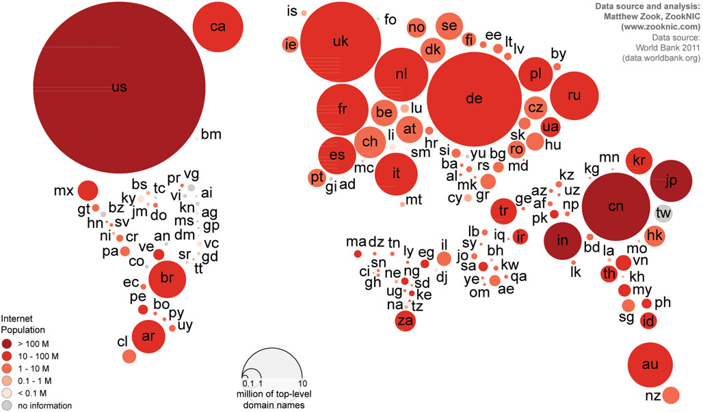

The research focuses on 3 categories. Geographies of access and enablement. With this part of they explore who has access and enablement. This allowed for gaining insight and understanding of distribution of technologies and services. With the digital engagement mapped, it points to internet users and total populations datasets from the World Bank, internet connections which has backed internet users and internet connections per country showed that China does have the largest internet population. With other countries like USA, India, Japan also behind China as they also have a huge number of internet users however they have less penetration compared to Europe, North America. similar to India has a large number of internet users, there is less penetration. In terms of Africa, they are between < 20 and 20-40 percent of penetration.

Image illustrating the number of internet users in comparison to the peneration
The authors further look at the uneven pattern in the geography of internet access; this is different across different places. With Global North, the cost is relatively low whilst Africa; the average cost is quite high, the cost range from 10% to 250% of the average income of the individuals (Graham et al 2015:92). This is because of how the internet cables are placed connected which means that there is politics in how the internet cables are placed. South Africa is one of the countries that has the highest data prices with the trend that took place on social media platforms with the hashtag data must fall. According to the research company tariff compared the prices that South Africans pay for data-only packages compared to Brazil, Russia, India and China. Also compared to South Africa’s data-only pricing to the African countries like Kenya with the emerging market and developed market of Australia (Van Zyl 2016). The comparison was against the average data contract prices across the use of local mobile network operators with the results demonstrating that SA has the second highest data contract prices in the group. Data prices for South Africa were on average 134% more expensive that the cheapest prices in the group so 1GB would be R77 in South Africa whereas in Brazil it would be R210, Russia it would be R32 and India the data costs would be R53. This was the data cost measured in 2016 (Van Zyl 2016).
Image illustrating the average cost of internet access
In the research exploration of participation, the authors look at 3 different variables domain web which allowed for the authors to indicate content produced on the web. GitHub was used to measure contribution and Wikipedia. The research result showed that the 78% of domains are registered in Europe or North America with Asia only having 13% of the world domains, Latin America which is 5% and Oceania which is 13% and with the middle east and Africa only making up 2% combined of the world domains. The authors deduce that the large numbers of internet users does not mean or entail that there is a large number of domain registration in reference to China (Graham et al 2015:95).
Image example of the contribution of github edits
Image example of the interent population
This concludes that there is a big difference between access of information and participation in tis creation (Distribution as we can America (North), West are the producers of this content. When looking at the GitHub quantitative results, this also skewed and shows an uneven pattern in terms of contributions on GitHub. There is a disproportionally concentrated within Europe and North America, this measurement of content creation also shows uneven patterns. It is not only with domain names of websites but software. North America and Europe contribute to a higher rate than any other region in the world (Graham et al 2015:96). In terms of Wikipedia contributions also shows unevenness. The authors have recorded that there are inequalities as edits/contribution are from user located in the US in comparison to Africa; there are only a few edits that demonstrated to be from Africa and the Middle East. Looking at geographies of representation. To understand the representation within the immutable augmentation of world; The authors analyse the geographies of series of different digital representations: Google search, Open Street map, semantic web, geonames. The research result show that there are patterns of unevenness with different platforms that allow for the representation of places. The authors point out that how can the geographies of information be more inclusive and less uneven. it is about decolonising but also it is about focusing more attentively about how this can impact or have an effect on post-colonial modes of information governance. The research while it does not detail the causes; the question of why there are these disproportional, uneven geographies of why there are uneven geographies. the authors point to the idea of decolonising, disentangling the mutability, immutability of information mapping and critically questioning the power of what is made visible versus invisible.